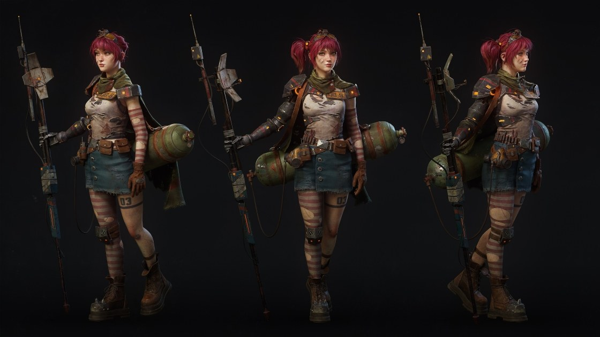

01
Substance 3D Painter 12.2：直接在模型上繪製 Cage 距離並即時重烘焙
Adobe 說明 Painter 12.2 的烘焙重整：使用者可在模型上以繪製與多邊形填滿操作調整 Cage 投射距離，搭配 Skew 修正、自動重烘焙、材質組反白與透明排序改善。

Substance ★★★★★
完整分析
烘焙修正技術流程
Skew 控制烘焙射線方向，Cage 則控制射線距離；兩者把 Painter 的繪製系統帶入烘焙模式，並以隱藏圖層堆疊保存修正資訊，再由自動重烘焙提供近即時預覽。
資產迭代製作影響
Cage 可利用重新設計的多邊形填滿工具，為個別物件加入相對偏移，不必離開 Painter 另做 Cage；材質組反白也能從清單或視窗反查複雜多材質網格。
節點與透明限制待驗證
Imager 以外的本次訪談重點仍是操作流程，沒有量化烘焙速度；透明排序只針對即時視窗改善，且團隊明言部分選項仍會在後續小版更新持續補足。
BRIEF｜來源已驗證；證據深度較有限，完整分析會明確區分已知資訊與待驗證事項。